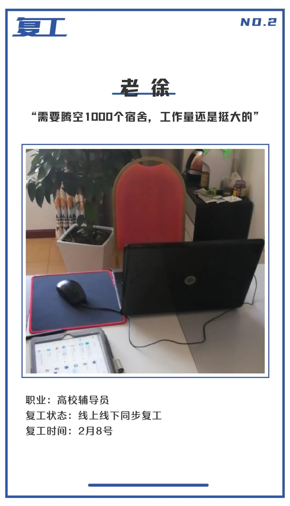
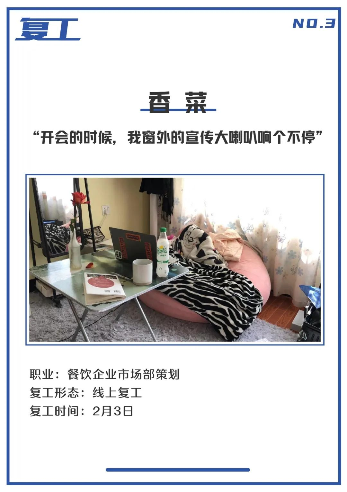
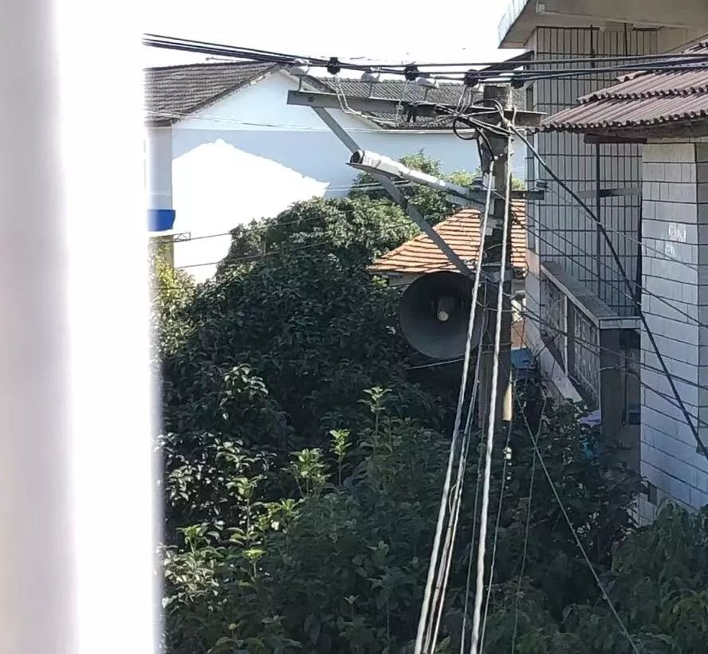
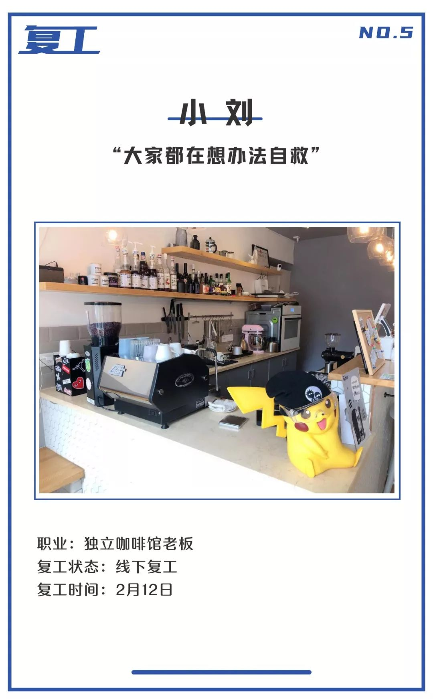
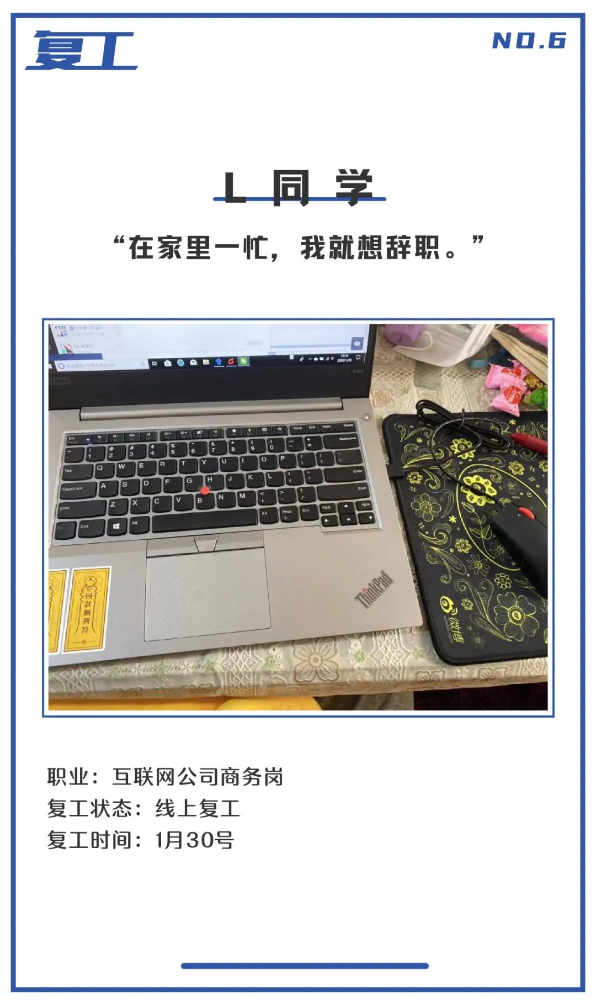
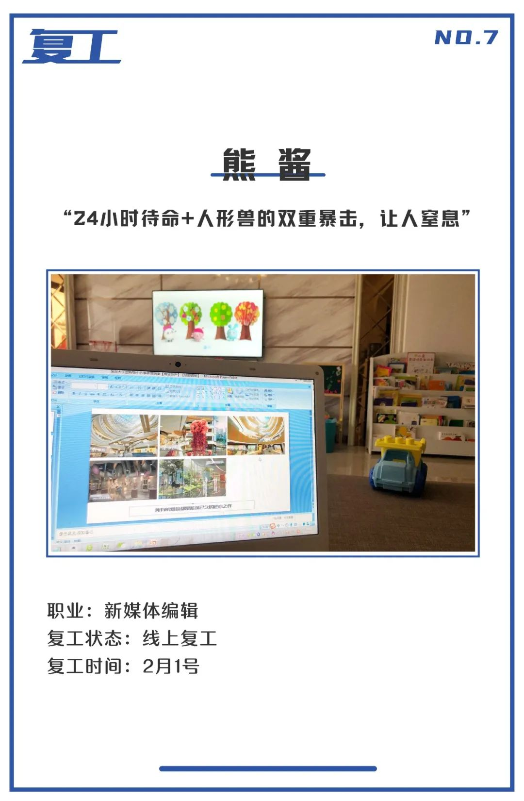

2亿人的“在家办公”实验
原文链接 备份链接 *************▲ *************2月10日，在太行山深处的河北石家庄市井陉县北良都村，北良都小学一名学生在家中利用网络听课学习。 （新华社 张秀科/图） 全文共3875字，阅读大约需要8分钟。 …


经历了漫长的春节假期，在被按下暂停键的武汉，复工，还是不复？这是一个问题。
当大多数人都被迫宅在家时，社畜们已经通过各种形式重新 “营业”。

曾经让无数社畜梦寐以求的不坐班成为现实后，“我好想回去上班！”的呐喊回荡在朋友圈。于此同时，店主们观望着复工的时机，有些勇士甚至已经尝试开业。还有一些人，在这段黑暗的日子，从来就没有停止工作。

在滴滴平台司机东东看来，他根本就没有所谓“复工”这回事。
“最早是在1月25号，平台就开始组织我们出车，主要还是负责社区人员、医护人员的接送，也会送物资之类的。”东东和我说，加上出租车，全武汉每天大约有6000台车供防疫统一调配。每个社区会有3-4台车，东东觉得基本上是够用的，有的社区情况严重些，可能用车会紧张。
“我们一般不敢接送发热或者疑似的患者，身边的朋友也有中招的，所以这样的情况基本上还是有专门的车子来接。”即便是这样，东东一天也要接三四单，“不算太累。”东东这样回答。
每天说是早上8:30出车，但东东每天很早就得起来，“现在街道和医院工作蛮紧，要去接人，很多人没有出行工具。下班也是一样，基本要等到社区人员下班，我们把她们送回去才行。不能说到点了我们就下班，那样别个工作人员就回不去了。”

除了社区人员，东东他们还会接送从方舱医院治愈的患者，“一般出院都是在晚上，最晚的有十一点多的，把别个送回去也快十二点了。”东东和我说，每个社区的情况不一样，像汉南、经开这样远一点的，社区会安排一日三餐和宾馆住宿。他这样跑主城区的，一开始只能有什么吃什么，经常就是泡面。后来一些志愿者团队会在每个区分点提供午饭，东东和车友们才解决了问题。
“家里人还是蛮支持的，不支持的话也不可能搞。”东东的车每天会有社区的人员进行消毒，社区的物资还算是充裕，东东之前还领到了两副防护眼镜，“不过我没怎么戴，对开车有影响。我们戴的基本上是一般的口罩。”

因为手上的班级是毕业班，也没有授课任务，老徐是从2月8号开始上班的。但他也并不轻松，学校有线上的健康打卡系统，老徐每天都要提醒学生打卡。线上办公在老徐看来还算是平常，状态都还好，工作也都能够按时地完成。
目前老徐所在的学校被武汉市政府征用为第二批储备隔离点，学生宿舍里的个人物品要统一收纳管理，这是老徐手头上最大的问题。
“学生们都还算比较配合，我们也知道这件事情很麻烦，现在以班级为单位按男女统计了物品清单。应该这几天就会开始动手清理，需要腾空1000个宿舍，工作量还是蛮大的。”
因为是辅导员，搬运物品的时候老徐需要在场，为了保证进度，学校要求在汉的老师都来学校帮忙。“就目前情况来说，这也是没得选择。”

“每天在家憋得慌，没有酒喝。”十八号酒馆员工香菜对于线上办公一时间还不太在状态。“我们市场部有时候喝酒才有灵感，现在呆在家的呆在家，滞留武汉的滞留武汉，居家隔离，也不能做什么，无力感是最可怕的。”
初十复工后，香菜和市场部的同事们开了三次线上的会议，也在准备开始每天交日报。线下门店的同事们，都在宿舍呆着，等待复工。

“我家在湖南，在家办公的时候，窗户外面那个宣传大喇叭不停地宣传防疫措施。开会的时候我只能静音，需要我发言的时候，我再打开。”
香菜和我吐槽，现在的疫情宣传已经升级到湖南花鼓戏版本，每次她的发言都是自带BGM，自己的普通话也不由自主的被带偏成塑料普通话。“家里人还会抱着猫进来看望一下我。”
尽力减少损失是香菜所在的企业目前最大的愿望。“我们最棘手的问题就是原料和物流的问题，除了门店，我们的酒厂年前还有几十吨酒放在发酵罐里，哪怕外地客户复工了要买酒，我们也没办法发出去。”

“有空来聊聊复工吗？”
“没空，昨晚加班到11点，今天忙得晕头转向。你给我发文字，我能写了给你，视频不行，顾不上。”这是呆毛给我的回复。
1月30号开始复工的呆毛，目前人在北京，原定初五回武汉的她已经在家工作了13天。据她了解，公司的大部分人已经开始复工了，正式上班时间暂定3月1号。

“我和你说，在家办公真的是各种不方便！比如效率不高，容易倦怠。和同事交流起来词不达意，因为大家都在忙，实在没办法的情况才打一个语音电话。”呆毛聊起在家的工作各种无奈。
“除了工作的不适应，还有就是家里的琐事。家里电视的声音一大，语音电话就听不清了。正在忙的时候，家人会突然问你吃不吃水果，喝不喝酸奶。到了饭点，就开始叫你吃饭… …我真的太难了。”
除了不用挤公交地铁，呆毛觉得在家办公一点也不好。“作为运营，虽说规定早上9点上班打卡，晚上6点下班，但现在晚上加班已经是基本操作了，24小时待命。”

“为啥复工上班？别问，问就是穷！”即使隔着屏幕，我也能体会到小刘的无奈。
小刘是睡不着俱乐部的老板，店是去年才正式开始营业的，“原先的计划是除夕休息，初一到初三营业时间缩短，从1月28号开始便正常营业。”而现在，2月12号才复工，比原计划整整晚了半个月。
“从昨天我就开始线上接单了，目前还是依赖外卖订单，到店里也只能是做好后外带，现在一共有三单。”小刘最担心的还是在这个特殊时期，骑手比较少，送货会比较慢，咖啡很容易就凉了。
虽然咖啡豆的供应商还没有复工，但目前小刘的店里咖啡豆的库存还够，开始营业也是想解决掉库存。“原来的营业时间是到晚上九点，现在的营业时间是从一点半到六点，晚上基本上就没办法了，营业时间因为送货的原因，缩短了一半。”
小刘告诉我，目前武汉市咖啡店复工的很少，一些酒吧都提供了外卖和自提服务。大家都在想办法自救。

下午6:32分，L同学在打卡的间歇才看到我上午发给他的信息。
“忙，之前坐班的时候是996，现在快成007了。” L同学1月30号开始复工，没有明确的工作时间和休息时间，线上办公让工作成为了随叫随到的无底洞。
“每天仿佛有做不完的工作，早晚的视频会议已是常态，每天的签到变成了红包接龙。有时候刚躺被窝，想起来还有一个表没做，又要爬起来。”工作压力大，使得同事们在晚上休息后会线上剧本杀或狼人杀。
“不过我都没有参加，每天我做完工作只想躺下睡觉。因为你不知道什么时候工作又来了，只能争分夺秒的多休息一下。”因此，沙发地毯被窝都成了他的工位。
受疫情影响，作为商务的L同学，联系客户也比之前更有难度，“有的客户年前打算签单，但是现在还没有复工，这也没办法。还有些就是在非工作时间来找你聊，你不得不加班。”
焦虑的L同学现在迫切地想回去坐班，“无论是工作效率还是工作对接，都是坐班更好。在家里一忙，我就想辞职。同事里有很多人想过辞职，还有些人已经辞职了。”

每当看到线上复工后网上的一片吐槽和哀嚎，熊酱只能报以一笑。
线上复工比惨，能比的过新媒体狗？新媒体狗比惨，又有谁能比得过拥有一只两岁人形兽的新媒体狗？
“我已经很久都不需要闹钟了，毕竟我家人形兽每天早晨可以自动客串人形闹钟。当然，这样的人间惨剧只是艰难一天的开始。”当其它人在抱怨在线办公造成的24小时待命让人窒息的时候，熊酱还得接受来自小孩的全天候暴击。
“以前在家办公嫌吵还可以让家人把娃带出去溜一圈或者自己出门，现在退无可退。连想要找到一个安静一点的地方都找不到。”
于此同时，新冠让熊酱的工作难度陡然上升。这很让她头秃。“毕竟对于大部分武汉新媒体而言，新冠其实是一道超纲题。”
“最近太南了。如果一定要说这段时间有什么收获，那就是我掌握了一边哄娃一边开会、一只手陪娃玩玩具一只手写稿等绝技。”当下，熊酱只有一个最朴素的愿望，“我想去公司上班，真的，求求了！”
- 💻 -
到现在为止，很多城市开始逐渐解封，各个行业也都在重新恢复运转。
武汉官方复工时间还在20天之后。我看着窗外，树梢上偶尔会有几只麻雀与我对望。是啊，春天来了。
text | 阿帕
photo | 由受访者提供
💬
# 你复工了吗？#


原文链接 备份链接 *************▲ *************2月10日，在太行山深处的河北石家庄市井陉县北良都村，北良都小学一名学生在家中利用网络听课学习。 （新华社 张秀科/图） 全文共3875字，阅读大约需要8分钟。 …
原文链接 备份链接 _ “不知道那些曾经一起抢出站闸机的人，现在正在遭遇什么？只希望这场疫情早点儿过去。” _ 文 |《财经》记者 王丽娜 袁满 编辑 | 朱弢 疫情之下，每个人的生活都有变化。即便是距离疫情爆发中心武汉千里之外的北京。 …
原文链接 备份链接 燃财经（ID:rancaijing）原创 作者 | 赵磊 金玙璠 闫丽娇 孔明明 唐亚华 黎明 孟亚娜 苏琦 编辑 | 魏佳 疫情肆虐，在法定节假日延长三天后，多地仍然要求企业在特定日期前不得复工，为此，很多公司都采取 …
原文链接 备份链接 _ “不知道那些曾经一起抢出站闸机的人，现在正在遭遇什么？只希望这场疫情早点儿过去。” _ 文 |《财经》记者 王丽娜 袁满 编辑 | 朱弢 疫情之下，每个人的生活都有变化。即便是距离疫情爆发中心武汉千里之外的北京。 …
原文链接 备份链接 以下文章来源于我是南七道 ，作者南七道 疫情，让老蔡这样的小微型企业措手不及。而开工之路，更是遥不可及 *******文｜ 南七道******* 广东随处可见的小工厂（南七道2019年摄） 受疫情影响，最近包括 …